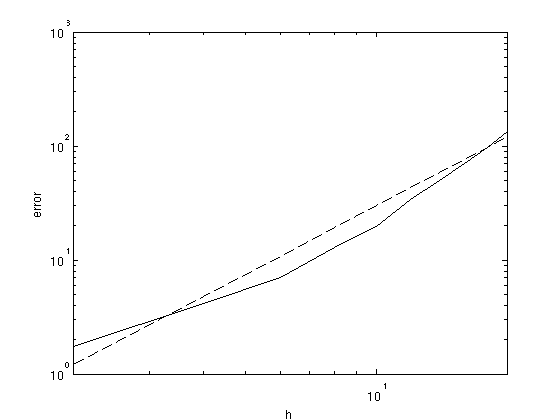
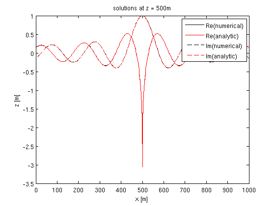
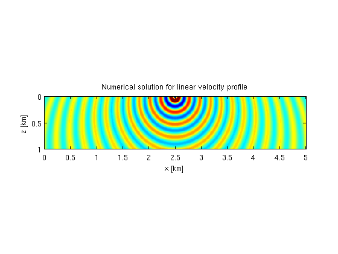
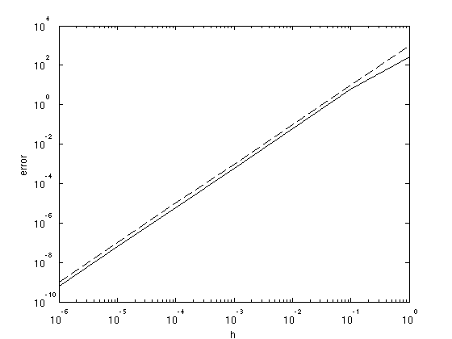

Contents
Analytic solutions
test against analytic solutions, see testing_analytic.m
tmp = dlmread(['../results/testing/error_mod.dat']); h = tmp(:,1); e = tmp(:,2); % plot error figure; loglog(h,e,'k',h,.3*h.^2,'k--');xlim([2,20]) xlabel('h');ylabel('error'); % plot solutions [D1,o,d,n] = odnread(['../results/testing/D1.odn']); [D2,o,d,n] = odnread(['../results/testing/D2.odn']); [z,x] = odn2grid(o,d,n); D1 = reshape(D1,n); D2 = reshape(D2,n); iz = floor(length(z)/2) + 1; figure; plot(x,real(D1(iz,:)),'k',x,real(D2(iz,:)),'r',x,imag(D1(iz,:)),'k--',x,imag(D2(iz,:)),'r--'); legend('Re(numerical)','Re(analytic)','Im(numerical)','Im(analytic)'); xlabel('x [m]');ylabel('z [m]'); title(['solutions at z = ' num2str(z(iz)) 'm']); [G1,o,d,n] = odnread(['../results/testing/G1.odn']); [G2,o,d,n] = odnread(['../results/testing/G2.odn']); [z,x] = odn2grid(o,d,n); G1 = reshape(G1,n); G2 = reshape(G2,n); figure; imagesc(1e-3*x,1e-3*z,real(G1),[-10 10]);axis equal tight; xlabel('x [km]');ylabel('z [km]'); title('Numerical solution for linear velocity profile') figure; imagesc(1e-3*x,1e-3*z,real(G2),[-10 10]);axis equal tight; xlabel('x [km]');ylabel('z [km]'); title('Analytic solution for linear velocity profile')  
Jacobian test
Accuracy of the Jacobian, see testing_jacobian.m
tmp = dlmread(['../results/testing/error_jac.dat']); h = tmp(:,1); e = tmp(:,2); % plot error figure; loglog(h,e,'k',h,1e3*h.^2,'k--'); xlabel('h');ylabel('error');
Adjoint test
Adjoint test of the Jacobian. See testing_adjoint.m
adjoint_table = dlmread(['../results/testing/error_adj.dat']); fprintf(1,'<Ax,y> , <x,A''y> ,error\n'); fprintf(1,'%2.3e, %2.3e, %1.2e \n',adjoint_table');
<Ax,y> , <x,A'y> ,error 2.453e+07, 2.453e+07, 2.22e-14 1.762e+08, 1.762e+08, 3.55e-15 1.896e+08, 1.896e+08, 1.42e-14 -4.903e+07, -4.903e+07, 7.19e-14 1.296e+08, 1.296e+08, 3.20e-14 -4.529e+08, -4.529e+08, 3.20e-14 -1.712e+08, -1.712e+08, 3.21e-13 -3.417e+08, -3.417e+08, 0.00e+00 -8.159e+08, -8.159e+08, 1.42e-14 3.125e+07, 3.125e+07, 7.99e-15
Scalability
Compute data for a model of size 1201 x 404, for 64 frequencies and 10 sources. See testing_parallel.m
par_table=dlmread('../results/testing/time.dat'); par_table(:,3) = par_table(1,2)./(par_table(:,2).*par_table(:,1)); fprintf(1,'Np, time [s], efficiency\n'); fprintf(1,'%2d, %6.2f , %1.2f\n',par_table');
Np, time [s], efficiency 1, 2459.50 , 1.00 2, 1339.50 , 0.92 4, 615.60 , 1.00 8, 313.10 , 0.98 16, 188.80 , 0.81 32, 109.50 , 0.70